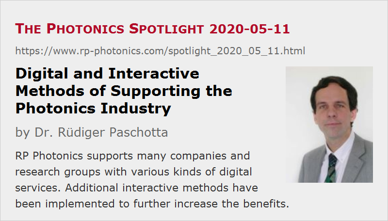

Digital and Interactive Methods of Supporting the Photonics Industry
Posted on 2020-05-11 as a part of the Photonics Spotlight (available as e-mail newsletter!)
Permanent link: https://www.rp-photonics.com/spotlight_2020_05_11.html
Author: Dr. Rüdiger Paschotta, RP Photonics Consulting GmbH
Abstract: RP Photonics supports many companies and research groups with various kinds of digital services. Additional interactive methods have been implemented to further increase the benefits.

It is well known that RP Photonics supports the photonics industry very much in various ways, and mostly based on IT – not only paying customers in the business areas of photonics marketing, simulation software and technical consulting, but also without any cost through the website, mainly with the RP Photonics Encyclopedia. Behind that is the conviction that being useful for others often pays back sooner or later. Indeed, that has worked very well over the years, and in some ways we now expand that further.
Information technology has been essential for my business from the beginning – I probably would not have started this company if it had meant that I need to travel around all the time, e.g. for technical consulting. In fact, from the very beginning I did nearly all work from my office. In times of the coronavirus crisis, this concept has become even more important – there is actually hardly any change enforced by the crisis.
The aspect of working in a strongly interactive mode is also important. A lot of insight, new ideas and other benefits are created in the interaction of intelligent people – more than in the isolated work of a single competent person. In the following, I elaborate on how I utilize that in various business areas to the benefit of my customers and in fact many others:
- new feature: questions are answered on the RP Photonics website
- digitally delivered training courses
- digital marketing
- simulation and design software
- technical consulting
Questions and Comments on the Website
For many years, numerous company people, researchers and students have been using the RP Photonics website, mostly the encyclopedia, for their work. During the years, I have obtained a lot of feedback. In recent months, I have developed more ideas how to make that even more interactive. That led me to the idea of actively encouraging users of the encyclopedia (and people reading other articles) not only to enter feedback, but also to submit questions of general interest. Every encyclopedia article now ends with a section titled “Questions and Comments from Users”; the focus is on questions. Now, it typically happens several times per day that someone submits a question which I consider as useful for the general public. I then normally answer that within one or two working days.
Questions of users often help me to understand what important aspects are still missing in an article, or what should be explained more clearly. I treat some of the questions by just improving the related article. It also happens that people make me aware of some errors, often just some typo, and I am happy to correct such things quickly.
It seems that many researchers and industrial people appreciate very much that convenient new way of quickly resolving certain issues encountered in their work. Some people even hope to get more complex problems solved by deferring such jobs to me, but I can of course not spend unlimited time on free technical consultancy.
As an example, see the article on coherence length, which at the moment contains two such questions and answers.
Digitally Delivered Training Courses
For many years, I have offered tailored training courses, and I consider those as some of the most productive things I can do for my customers. Within e.g. one or to course days, the competence of the whole team can be boosted, and it is also likely that new ideas are generated.
Often, I perform such courses on the client's site. However, particularly when I am asked by clients in the United States, I always check whether it is possible to deliver such a course through the Internet. It is not only that I like to avoid the hassles of traveling; a substantial amount of CO2 emissions can be avoided that way. We cannot afford nowadays to generate tons of CO2 without a clear reason.
Further, there can be substantial flexibility gains from the digital way of delivering courses. For example, a customer once asked me to deliver a two-day course in California and agreed to do that digitally. Then they found that they want the course to be spread over four half days within two weeks. That would definitely not be feasible if I would need to travel there, but doing it online was no problem at all. I even recommend that we split courses into reasonably short sections, so that the participants find it easier to concentrate and have opportunities to digest and discuss things between those sections.
Now, in times of the coronavirus crisis, digitally delivered courses are even more important:
- They allow R & D teams to further develop their technical and scientific skills while progress in the lab is slowed down by various factors such as difficulties of implementing the required social distancing, missing supplies, etc.
- Such courses can be delivered to each participant separately, e.g. with a notebook in the home office.
- Continuing education also becomes more essential if plans must be adapted, for example focusing on new developments where the available skills are not yet sufficient.
Digital Marketing
A focus on digital methods of interaction is of course particularly useful in times of the coronavirus crisis. In particular, that holds for our important area of digital photonics marketing. I recently published on Photonics Marketing in Times of the Coronavirus Crisis, and since then various companies have started engaging with our ad package.
Obviously, digital marketing has become even more important at a time where other options have faded away. People are now more actively searching for productive ways of utilizing their marketing resources in that area, and saved expenses (and working time) from canceled exhibitions are now used that way.
I always welcome if people critically compare our offers with other digital marketing offers. Indeed, one can waste a lot of money in this area, since many offers are by far not as attractive as they look at a first glance. When marketing people can now find some more time, e.g. checking the crucial photonics websites instead of organizing exhibitions, they can make findings which are very useful for them and for us.
Simulation and Design Software
Our software business has always been fully digital and strongly interactive. Customers get their software licenses by e-mail/download, and the support is largely done by e-mail.
It seems to me that some people can finally find the time to start with physical modeling; previously they may have recognized how useful it is, but always postponed it due to more urgent jobs.
Technical Consulting
Although this part of our business has lost relative importance due to the good development of the software and the photonics marketing business, I still offer technical consulting in the photonics area. This has always been (a) mostly digital and (b) strongly interactive.
Nearly all of that consulting has always been done without me visiting the site of the customer. The only exception is the area of training courses, where so far in most cases I did this with a physical presence, particularly when it was in Europe.
Some people would imagine a technical consulting project to work such that one initially works out a detailed plan for what exactly has to be done, and then I carry out that work and deliver the results (as a report, for example) to the customer. The customer would then compare my results with the plan to check whether I have provided what we agreed on.
However, we usually don't do it like that. The problem with the mentioned approach would not only be that it is quite tedious to define in the initial phase exactly what will have to be done and delivered. It would also not make much sense, because it is usually impossible to predict how the project will evolve. For example, one may discover new problems which need further attention, or find that certain steps turn out to be unnecessary. Therefore, we typically work as follows:
- In a first telephone or video discussion, which may take only e.g. 30 minutes (often before a contract is in place), I get sufficiently informed about the context and what is needed by the customer.
- If we see that I can help in this matter, we sign a framework contract, which does not define the technical details to be done, but only the basic conditions: essentially my hourly rate, total flexibility for the customer (i.e., no commitment to a certain contract volume) and additional provisions, for example related to confidentiality. That requires little work from both sides.
- We then informally agree only on a first small work package, for which I estimate the amount of time required (typically only few hours). I then do that work and deliver the results – just preliminary results for the project as a whole.
- Then I wait for feedback from the customer. Typically, they will come up with additional questions and comments, and we can soon agree on the next small work package.
So we have a regular exchange of results, questions, comments, concerns, suggestions, etc., with which we gradually work towards the final goal. At any time, we can adjust the strategy based on the best current understanding of the problem.
That interactive approach works very well for my customers:
- There is no big hurdle for the start of a project – no detailed plan to be made.
- The risk of a misunderstanding is minimized. If there is any misunderstanding, we will recognize it quite early, long before the end of the project.
- Most importantly, we can flexibly adjust our route while learning more and more about the problem and possible solutions.
- The customer will usually learn more from this interactive project than from reading only a final report. It may well be that their competences grow such that they won't need me for the next problem of that type. That's fine with me – I have no lack of work!
- My customers can interrupt or stop the project at any time, e.g. if we find a shortcut solution which requires less work than anticipated, or if the problem turns out to be so severe that they decide to give up, or if they are unhappy about anything. However, according to my memories no consulting customer ever terminated a project prematurely due to being unhappy about my work.
The only disadvantage of the described approach is that it is hard to predict initially how much work will be required for the project, and thus what it will cost in the end. That results essentially from the inherent uncertainties of such projects, which would be difficult to reduce even with tedious initial work. If some customer would insist on a fixed price to be defined at the beginning, we would have to precisely define the deliverables, and I would have to estimate the amount of work required with some substantial margin, which may in the end benefit the customer or myself, depending on how it goes. Also, I would have an incentive to do things quickly, without much checking, in order not to spend too much time – I definitely wouldn't like that. The vast majority of people fully recognizes the advantages of the proposed approach and is happy to engage that way.
This article is a posting of the Photonics Spotlight, authored by Dr. Rüdiger Paschotta. You may link to this page and cite it, because its location is permanent. See also the RP Photonics Encyclopedia.
Note that you can also receive the articles in the form of a newsletter or with an RSS feed.
Questions and Comments from Users
Here you can submit questions and comments. As far as they get accepted by the author, they will appear above this paragraph together with the author’s answer. The author will decide on acceptance based on certain criteria. Essentially, the issue must be of sufficiently broad interest.
Please do not enter personal data here; we would otherwise delete it soon. (See also our privacy declaration.) If you wish to receive personal feedback or consultancy from the author, please contact him e.g. via e-mail.
By submitting the information, you give your consent to the potential publication of your inputs on our website according to our rules. (If you later retract your consent, we will delete those inputs.) As your inputs are first reviewed by the author, they may be published with some delay.
|  |
If you like this page, please share the link with your friends and colleagues, e.g. via social media:
These sharing buttons are implemented in a privacy-friendly way!